Tony Florida
EN 605.713 Robotics
Johns Hopkins University
Midterm Project
Given: 29 Jan 2014
Due: 12 Mar 2014
Written Documentation
View as PDF
Notes/Assumptions
- Vehicle and wheels are drawn to scale.
- Vehicle coordinate system aligns with global coordinate system upon page load.
- Each cell in the grid is 6" x 6".
- Environment is flat, high friction, infinite area.
- Max speed of vehicle is 15 ft/sec.
- Angles are specified clockwise from the positive Y axis.
Kinematic Equations
- Forward Kinematic Equations
Equation
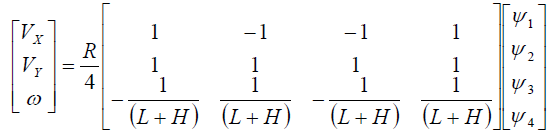
Implementation
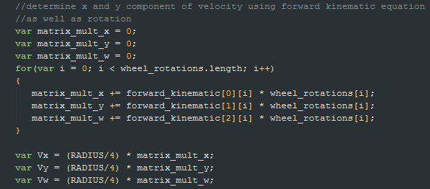
Code
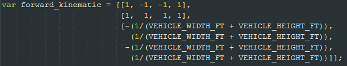
- Inverse Kinematic Equations
Equation
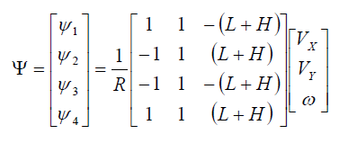
Implementation
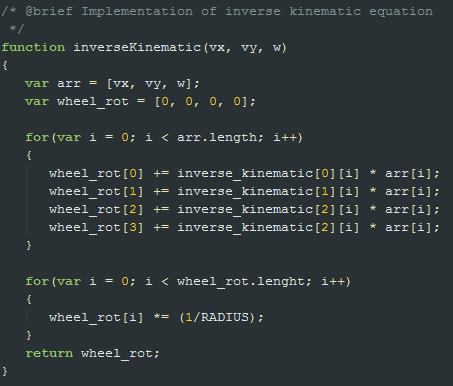
Code
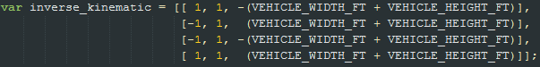
Control Algorithm
Calculating Animation Data
The following algorithm validates user input and calculates the data necessary to perform the animation of the vehicle. Animation data includes direction, rotation, and speed. The algorithm also considers the fact that the origin of the canvas is in the upper left corner of the screen whereas the global origin is initially in the center of the canvas.
- Validate user input
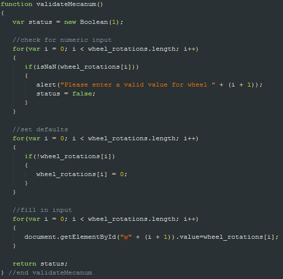
- Apply user input to forward kinematic equation
- Adjust rotation to align canvas coordinate system with Cartesian coordinate system
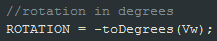
- Determine velocity vector from X and Y components using Pythagorean's Theorem
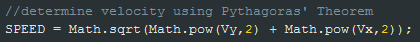
- Check max vehicle speed
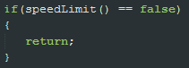
- Draw path to be executed
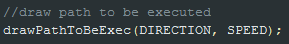
Animation
The following algorithm takes the animation data that was calculated above, adjusts it based on the frame rate, and passes it to the appropriate KineticJS function to perform the animation.
- Determine new X coordinate based off of X component of velocity vector
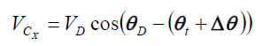
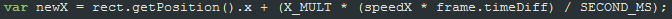
- Determine new Y coordinate based off of Y component of velocity vector
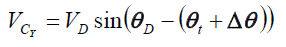
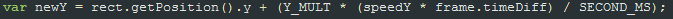
- Move the vehicle
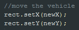
- Draw the path the the vehicle has traversed
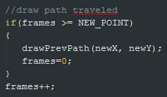
- Update global coordinates
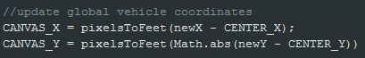
- Rotate the vehicle
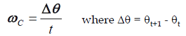
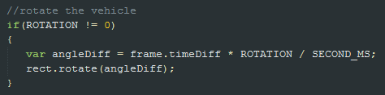
- Determine if the vehicle has come within 3 feet of canvas edge
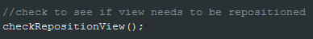
Waypoints
Waypoints leverage "The 3 Questions" of autonomous mobile robots: Where Am I?, Where Am I Going?, How Do I Get There?
- Where Am I?
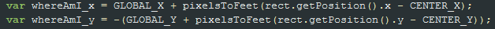
- Where Am I Going?
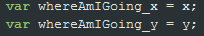
- How Do I Get There?
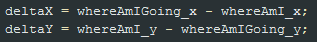
Circle
The control algorithm for the circle path mode is very similar to Mecanum mode with the following additions.
- Calculate the circumference of the circle and determine the vehicle speed based on given time. This code is called only once prior to begining the animation.
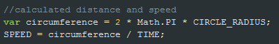
- Determine how many degrees per frame the vehicle needs to move.
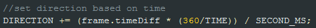
- Determine the new coordinates for the vehicle based on the X and Y components of the speed and the frame rate.
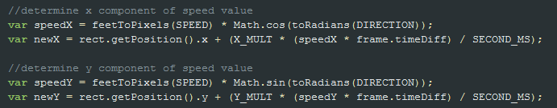
Math Equations